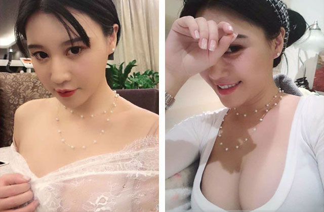
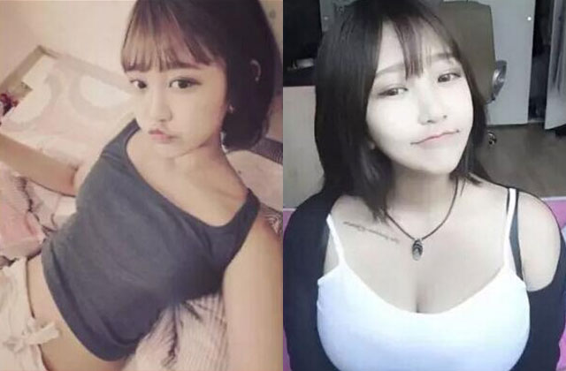
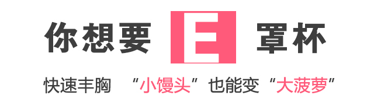

导语： “粉红丝带”作为全球乳腺癌防治活动的公认标识，用于宣传“及早预防，及早发现，及早治疗”这一信息，足迹遍布全球数十个国家，早在2012年，该公益组织便发现，东方亚洲人群的胸部小于世界平均水平，对于哺乳和家庭幸福都有巨大的影响，于是粉红丝带开始了对胸部营养补充及二次发育领域做出持续的研究，已帮助全国上万名平胸女性群体成功丰胸，在这一人群中有不少是产后妈妈，曾经丰胸失败者，先天性遗传胸小者等在她的指导下丰胸成功！
看我怎么解决平胸的苦恼
先声明，我分享的方法适合:先天发育不良；胸部扁平、外扩；产后乳房下垂、缩水；乳房一大一小；减肥后胸部变小等情况，年龄在16-60岁的都可以使用。
无图无真相，看看我丰胸前后的对比照，丰胸效果非常明显
我今年27岁，以前是B罩杯，生完孩子后，由于坚持母乳喂养，断奶后我就成A罩杯了，而且有点儿下垂。老公表面虽然说的不介意，可是亲密的时候明显感觉得到，看到我胸部的那种眼神，失望和无奈……
男人说：不介意你平胸。那都是哄3岁小孩的鬼话，哪个男人不喜欢自己女人胸大？他嘴上说不介意，实际呢？为了哄你开心，不想让你找事儿而已。
结婚前，虽然不算大，但也算是前凸后翘，曲线玲珑。可是现在变成了A杯，乳房可怜兮兮的耷拉着，原本已经不大的胸部，彻底看起来跟没胸一样！
渐渐的，老公加班、应酬的频率变多，回家时间越来越少，我跟他谈过几次，他搪塞说工作忙没办法，心里还是很爱我的。可是后来有时半夜居然看到他，在偷偷看黄色网页，画面中一个个大胸妹啊，看得我是又气又羞！
我百感交集，也不知该不该恨他，唯一知道的是：在这个充满诱惑和欲望的时代，我要丰胸，我要变性感!!
接下来就是各种尝试，开始在网上搜集各种丰胸产品，口服的、擦的，只要有网友推荐我都买来试试！什么木瓜炖雪蛤，木瓜银耳红枣羹，黄豆花生煲猪蹄换着法儿的吃，结果胸部还是一两肉都没长，腰上反而肥了几圈儿·····
最后想到去隆胸，但隆胸失败的案例让我望而却步····
心灰意冷的我跑去找闺蜜散心，见到她却大吃一惊，1年不见，记得她以前也是B杯啊，怎么现在变得那么大，我试探着问“去哪里整了个假胸啦？”
闺蜜马上拉着我的手去摸，“这是货真价实的真胸啦”。
看到闺蜜这样的身材，真让我羡慕，于是跟他一顿诉苦，她又好气又好笑，“这下你有救了，看我，你也可以像我这样的”，挺了挺她起码有D的胸。

闺蜜推荐我加梦茜，我有点怀疑。我以前用过一些其他老师的办法，但没啥效果，这个真的有效么?她说至少她是变丰满了，还叫我先加梦茜微信，看看朋友圈里面的反馈。
在微信中搜索
2018年新晋丰胸达人梦茜，已通过微信平台，帮助全国上万名平胸女性成功丰胸。
丰胸方案全揭秘，梦茜都发在朋友圈里了，欢迎学习交流。
有了我同学的案例，我谨慎的心有了一点信服力，就大胆的加了梦茜，她的朋友圈里面满满的是姐妹的反馈，更有各种各样的关于胸部的保养方法，真的算是一部小型的胸部保养的说明书。通过梦茜我了解到乳房大小主要取决于胸部里的脂肪细胞，如果脂肪细胞发育成熟，胸部自然就丰满。所以要想实现丰胸，就必须要唤醒乳房的脂肪细胞，激发再度发育的能力。
在梦茜的帮助下，大概三星期后，明显觉得乳房开始发热、发胀了。一个月过去，内衣变得很紧，平时穿的内衣变得很紧，感觉透不过气来，于是去内衣店换了一批新的内衣回来，试的时候心情是从来没有过的喜悦，一个月，这效果让我看到了希望啊！
第二个月，我胸围增大了将近6CM，乳房已经开始挺起来了，效果出来啦。丰胸的大工程进行到现在，还是第一次那么明显感觉到成效啊！也是，效果是一点一滴累积起来的！
第三个月，36C，增大了2罩杯，属于我的传说，慢慢的，后面效果越来越好，我就激动了，还没过完3个月，华丽丽呈现出D杯啊！！圆润饱满有弹性，别说是男生看了会被诱惑到，我自己都爱不释手了。我算了一下，3个月的时间里，我这乳房平均每个月增大3CM左右。然后我的胸部变成了D杯，增大了3个罩杯。其实我想说，可能不止三罩杯哦，因为D杯已经有点挤了！！
梦茜的整个丰胸过程都会让人亲身感觉的到，乳房又挺又翘，还变得超有弹性。停了几个月，用软尺量也没变化，后续效果也让我很满意。
以上就是我的丰胸故事，我希望更多的人能看到我的文章，让更多的人能早日摆脱平胸的自卑与苦恼。也希望我的经历能给大家在丰胸路上带来一点点帮助，因为我深知平胸的痛苦！
身边的朋友纷纷加入丰胸行列
这么明显的改变，让我朋友圈的很多朋友都找上门来，我只好一一介绍给梦茜。没想到，她们也成功了。为了能让更多的姐妹用到这个调理型的丰胸方法，很多姐妹发来了丰胸成功后的照片做口碑宣传。
筱笛
我的好朋友筱笛，自从生完孩子后，胸部就缩水变小，且还一大一小不匀称，在添加梦茜微信后突然意识到，丰胸要从疏通乳腺导管开始，乳腺导管畅通了然后才能帮助激活胸大肌细胞，调整乳房组织，促进血液循环，使养分充分的吸收才能强化胸部组织，才能促进胸部再次发育的。在梦茜的帮助下，两个月就逆袭拥有饱满坚挺的美胸！
我的好朋友筱笛，自从生完孩子后，胸部就缩水变小，且还一大一小不匀称，在添加梦茜微信后突然意识到，丰胸要从疏通乳腺导管开始，乳腺导管畅通了然后才能帮助激活胸大肌细胞，调整乳房组织，促进血液循环，使养分充分的吸收才能强化胸部组织，才能促进胸部再次发育的。在梦茜的帮助下，两个月就逆袭拥有饱满坚挺的美胸！
刘晓芸
我的好朋友刘晓芸，胸部跟丝瓜瓤子一样，又扁又平，一点手感都没有！就是在梦茜的指导下，很快的，胸就挺了，罩杯也升级了，轻轻松松就拥有饱满的美胸，现在的她老爱穿一些布料少的衣服，她说以前太自卑了，这下要扬眉吐气！

我的好朋友刘晓芸，胸部跟丝瓜瓤子一样，又扁又平，一点手感都没有！就是在梦茜的指导下，很快的，胸就挺了，罩杯也升级了，轻轻松松就拥有饱满的美胸，现在的她老爱穿一些布料少的衣服，她说以前太自卑了，这下要扬眉吐气！
李露
我的表妹李露，因为遗传了我小姨，胸部就不是很大，连32A的内衣都撑不起来！哪怕去海边玩，都没有穿比基尼的勇气，看到别人的美胸总是特别羡慕。后来遇到现在的男友就特别自悲“自己的胸部”问题，后面在我的推荐下加了梦茜的微信，在梦茜的帮助下，
我的表妹李露，因为遗传了我小姨，胸部就不是很大，连32A的内衣都撑不起来！哪怕去海边玩，都没有穿比基尼的勇气，看到别人的美胸总是特别羡慕。后来遇到现在的男友就特别自悲“自己的胸部”问题，后面在我的推荐下加了梦茜的微信，在梦茜的帮助下，
用过的人说好，才是真的好
下面给大家分享一些梦茜老师粉丝女神的对比照
测一测你适合哪种丰胸方案
每个人都可以丰胸，为什么不是你呢？别再说丰胸困难、丰胸辛苦，那是你决心还不够方法不行。梦茜的丰胸方案适合所有需要丰胸的妹子。已帮助全国100000+朋友丰胸成功！你还不行动。
 >>快加梦茜微信，轻松丰胸！为了更好地为大家服务，希望大家加我为微信好友后能主动咨询！因为每天加梦茜的人实在太多啦！你不问，我就不知道你是否需要帮助喔！
在微信中搜索
丰胸达人梦茜，提供一对一的解决方案帮你轻松丰满坚挺！
两个月快速A杯升C罩杯的丰胸方案全揭秘，梦茜都发在朋友圈里了，欢迎学习交流。
-
伪装坚强ぢ
平胸多年，用了很多办法都没有效果。想要运动丰胸但总是胸先瘦，我该怎么办啊！好想摆脱小胸的困扰啊~~~
小微：我之前也是很绝望，不过梦茜老师经验很丰富，肯定可以的，你可以加微信咨询看看~
-
想错不在你
不看不知道，她的朋友圈简直就是新世界！好多丰胸成功的姐妹的案例，堪比整容级的改变?????我又开始有信心了！
-
幼稚范er
梦茜真的很棒，我今年38岁，本来以为到了我这个年龄真的很难丰胸成功了，但是在梦茜的帮助下，我只用了几个疗程就增加了两个罩杯，按照她的指导，现在甚至比以前更有型，老公也说我像换了一个人一样！
-
樱花飞扬的季节
胸部下垂很多年了，从不知道胸大的感觉，用了很多方法都没有改善，真的还有救么？~
妍妍：可以的，梦茜帮好多姐妹调理过下垂问题的，您可以加她的微信，了解下关于胸部的日常保养知识
-
薇薇安
梦茜真的不错。我本来左右胸就不对称，还有副乳。使用她推荐的丰胸产品，现在甚至比以前更有型了。我会继续坚持梦茜推荐的方法的，本来丰胸就是个需要长期坚持的过程。
-
candy
已经加上梦茜的微信了，和她聊天真的很有意思，有时候我有什么烦恼也会找她聊，她真的很好，一点都不嫌麻烦还很耐心。
-
克拉恋语
梦茜真的有方法吗？我平常时穿内衣都很注意啊，为什么还是下垂？
晓梦：建议你添加下梦茜的微信，可以了解下关于胸部的日常保养知识
-
调儿啷当
梦茜很热情，跟她咨询了很多问题，一直很耐心地回答我。丰胸前还很怀疑，但第一周就感觉胸变凸了。1个月下来，成C杯了，很开心！
-
梨花烙
已经在和梦茜咨询过了，分析我的情况很到位，专业！点个赞
-
错错错是我的错メ
看来大家都是受益者啊，我也是。我觉得她就是个女性专家了，有次无意跟她聊到妇科问题她都给了我很多帮助和建议，我很相信她。只有女人才是最懂女人的。
-
一叶菩提
美女，梦茜的微信号多少啊？
梦里看花：微信号就在上面的红色框呀，复制到微信搜索添加就可以的
-
余韵
生完宝宝后，老公经常在我面前说我胸不如原先大，真是烦死人了。后来在群上看到梦茜的微信，大家都说她的丰胸方案不错，是根据体质定制的。用了梦茜的丰胸方案，没想到真的变大了。开心死啦！！
-
梨花烙
已经在和梦茜咨询过了，分析我的情况很到位，专业！点个赞
-
Coco李
哺乳期不给孩子哺乳真的能保持胸型么？我是个刚怀孕的新妈妈，很担忧产后身材这个问题。
幂：不要盲 目相信没有依据的说法哦，梦茜的方法都是来自于上万个成功的美胸经验总结出来的~
-
メ错了而已
我也非常认同，男的真的是喜欢胸大的，天天吃素的话他们能不想吃荤么？所以姐妹们，这个问题真的不能忽视！
-
你好岁月
胸部问题真的是我不想面对的一个问题，一直不敢谈恋爱就是这个原因。再漂亮又怎样，我就问过我身边的男性，有料和没料的他们当然是喜欢有料的。
-
筱筱兔
我应该很有发言权，是她近一年的粉丝了，之前是一点胸都没有通过指导慢慢有点肉，底盘大了很多。我从去年五月十一号认识梦茜到现在开始到现在升了两个cup，我现在很自信。
-
叮叮当当
我37岁了，天生A，不是平平的那种，像个小桃子的那种小的，生两个孩子都是很晚断奶，30岁生的二胎，右边乳头那里瘪下去了一点，自己看着挺难看的。这种天生的还能挽救么， 希望能变成大桃子我都满足了...不奢望B.C...啊啥大杯的
-
戏剧牡丹亭
我是二胎妈妈，两个孩子都是母乳喂养，已经科学断奶但还是逃不脱缩水的现状，虽说某人没嫌弃， 但自己还是介意的，毕竟跟以前差别太大。关注梦茜也是个意外，但是从她的朋友圈可以看到还有很多人是 和我一样经历着各种问题，她也会很好的和大家分享出来并且交流，我觉得这样很好。
-
樱梨花
我想需要她的人太多了，我会一直关注。
-
情定渔人码头
我是小B，在怀孕期间也只是长到75C，本身肠胃也不好，但也属吃吃就会发胖的体质，偏偏却不长胸……但是要是减肥胸就会瘦！为什么！
-
 天使的心
天使的心 女生就应该把自己经营好，只有自己有傲娇的资本才能拥有幸福。
-
浮生晓梦
我是梦茜的老粉了，从几年前就关注她了。我们就像老友一般，经常会一起讨论健康问题，如果我出差去深圳的时候还会参加她的讲课，和很多姐妹们一起喝喝茶讨论分享，很轻松开心~
-
风尘少女
我43岁了，一直都很注重这方面的保养。朋友都很羡慕我，和老公的感情一直都很好，我觉得自己很幸福~
-
3克拉Dé恋语
我觉得现在女生都没有什么美胸意识，或者是有意识但是找不到正确的方法，看了看她的朋友圈，有很多成功案例分享，挺专业的。
-
 撒旦狂热族
撒旦狂热族 听说她还为很多模特明星做过专家咨询。我是在传媒公司做网红经纪人的，也是从圈内人的口中知道她的。
-
 天使之缘
天使之缘 我觉得可以试一试她的方法，万一呢，女生就应该坚持对美的追求！
-
 妖精哪里逃
妖精哪里逃 她真的有很多粉丝，关注这一方面的人应该都知道她吧
-
 你给的天空
你给的天空 其实在胸部保养方面要注意很多，女性的乳腺的问题也是现在很大的问题，很容易被人忽视，但是梦茜她都照顾到了，很真诚细心的一个人
-
骨子了透着你的气息
我是每次姨妈期间都会胸胀，但是不见胸部大小有什么变化，后来尝试着咨询过她，没想到她竟然仅仅通过这一方面知道我痛经和面部问题，而且还帮助我改善了这种状况。真的感谢，所以我才忍不住在这里分享给大家~
-
 心爲你而跳動
心爲你而跳動 身边有很多女生有各种各样的问题，但是我也只是受益于人，所以就把梦茜介绍给了我的闺蜜们，她们都觉得在梦茜这里收获很多，比去医院花钱好多了~